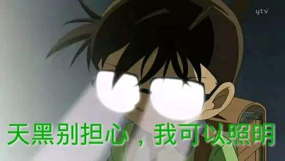
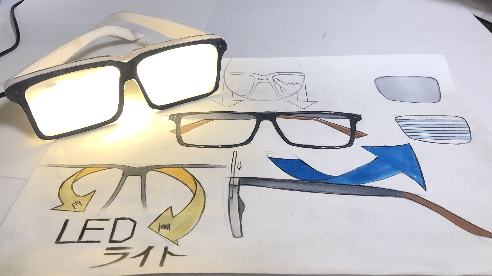

4月17日に完成したゴールドプロトタイプについて
まず、ゴールドプロトタイプを作るために4つコンセプトを決めました
1； 指導先生は授業中に生徒のスマホを探しているの顔を思い出すもの
2； 深夜に本を読むやすいもの
3；人が厳しいイメージを残すもの
4 二次元から三次元に運んだもの
つぎに、この4つのコンセプトに基づいて、光らせるメガネのゴールドプロトタイプを作りました
作業進捗
様々な視点からインスピレーションを探します
生み出したインスピレーションはこれです

プロダクトスケッチを通じて色んな案を提出します

ゴールドプロトタイプを準備する前に必要な素材及び道具
物差し、ハサミ、カーター、模型用紙、マーカーペン、のり、LEDライト
物差しで実物のメガネのサイズを測ります
決まったプロダクトスケッチとゴールドプロトタイプサイズは模型用紙に書きます
作られたメガネのゴールドプロトタイプを組み立ます組み立てます
LEDテップはメガネのゴールドプロトタイプに導入します
機能確認
ゴールドプロトタイプに着色します
光らせるメガネのゴールドプロトタイプを完成

5月28日に完成したワーキングプロトタイプについて
作業進捗
1：プロダクトスケッチをやり直す
2:ゴールドプロトタイプのサイズはメモに記録します
3：Fusion360で光らせるメガネの形を設計します
4：クロステック応用IIの授業中に3Dプリンターの操作知識を活用してFusion360で作られたのメガネ3DデータをUltimaker cureに導入します
5:Ultimaker cureに導入したデータは「ファイル.gcode形式」で書き出す
6:Ultimaker cureから書き出したファイルを3Dプリンターに導入します
7：3Dプリンターで2時間45分を経てメガネを作りました
8：めっちゃ興奮の気持ちを持って作られたのメガネを家に持って行きました
9；LEDテップの配線口が狭過ぎてLEDテップはメガネに差し込めないになりました

10：設計ミスの経験があって、メガネリムの暑さとLEDテップの配線口サイズを調整します
11：メガネリムの暑さとLEDテップの配線口サイズが変わたので3Dプリンターの制作時間は２時間45分から3時間12分になりました
12：LEDテップはメガネに差し込みました（メガネ部分のワーキングプロトタイプを完成しました）

メガネレンズの制作について
必要なツール、ソフト、素材：（レーザーカッター、イラレ、アクリル板450mmx600mmx1mm）
1：レンズの形はイラレで書きます
2：イラレでレンズデータの中に世界地図を書きます
3：イラレでレーザーカッターに応用できるデータを作ります
4：アクリル板はレーザーカッターに入れます
5：レンズを完成しました
6：完成したレンズとメガネ部分のワーキングプロトタイプを組み立て、最後に光らせるメガネを作りました

6月5日に授業内の作品レービューの結果から考えたこと
1：作品の定義は不明
2：実際に使えるメガネにする？
3：間接照明にする？
4：新しいインスピレーションを探しなければならない
5：先生とクラスメートのレービューに基づいて、夜にメガネを探しやすくというアイデアを生み出した
6：メガネの仕組みや見た目などをもう一度やり直さなければならないことになりました

7：Fusion360で新しいメガネの見た目と仕組みを設計します
8：メガネの蝶番を設計します
9：3Dプリンターで7時間50分を経てメガネを作りました
10：結局、ネジは蝶番に閉める時に蝶番が割れました
11：蝶番穴のサイズとネジの直径が合わなかったので、蝶番穴のサイズを書き直します
12：もう一度3Dプリンターで制作します
13：蝶番が割れたままになりました
14：3Dプリンターは蝶番を制作時に蝶番の形がズレた問題を発見しました
15：ultraファクトリーのform2で12時間30分を経てやっとメガネを完成しました。

完成

ネジと蝶番穴について
ネジ直径1.8mmと蝶番穴1.7mmを設計した場合：ネジしめる効果なし、蝶番穴が割れます
ネジ直径1.8mmと蝶番穴1.8mmを設計した場合：ネジしめる効果あり、蝶番穴が割れるます
ネジ直径1.8mmと蝶番穴1.9mmを設計した場合：ネジしめる効果あり、蝶番穴が割れるます
最後、授業内のプレンゼンして、先生たち色んなレビューをもらって夜に探しやすくメガネはメルカリに載せました
最後のレビューから考えること
プロダクトデザインは目ためを重視するだけではなくUXはプロダクトデザインの大事なことが覚えました。
製品に様々機能を重なることだけではなく機能の重要性から取捨選択するべきだ。